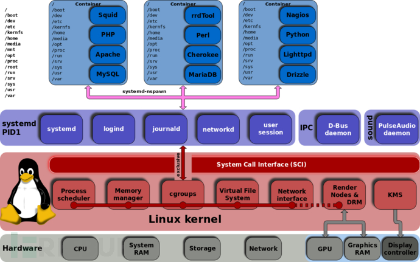

介绍
cgroups 是Linux内核提供的一种可以限制单个进程或者多个进程所使用资源的机制，可以对 cpu，内存等资源实现精确的控制，Docker 就使用了 cgroups 提供的资源限制能力来完成cpu，内存等部分的资源控制。
cgroups 的全称是control groups，cgroups为每种可以控制的资源定义了一个子系统。典型的子系统介绍如下：
- cpu 子系统，主要限制进程的 cpu 使用率。
- cpuacct 子系统，可以统计 cgroups 中的进程的 cpu 使用报告。
- cpuset 子系统，可以为 cgroups 中的进程分配单独的 cpu 节点或者内存节点。
- memory 子系统，可以限制进程的 memory 使用量。
- blkio 子系统，可以限制进程的块设备 io。
- devices 子系统，可以控制进程能够访问某些设备。
- net_cls 子系统，可以标记 cgroups 中进程的网络数据包，然后可以使用 tc 模块（traffic control）对数据包进行控制。
- net_prio 子系统, 限制任务中网络流量的优先级.
- pids 子系统， 限制控制组中进程可以派生出的进程数量。
- freezer 子系统，可以挂起或者恢复 cgroups 中的进程。 namespace。
cgroup和namespace类似，也是将进程进行分组，但它的目的和namespace不一样，namespace是为了隔离进程组之间的资源，而cgroup是为了对一组进程进行统一的资源监控和限制。

cgroup分v1和v2两个版本，v1实现较早，最初版本是在 linux kernel 2.6.24，随着时间的推移，添加了越来越多的controller，而这些controller又各自独立开发，导致了controller之间很大的不一致，功能比较多，但是由于它里面的功能都是零零散散的实现的，所以规划的不是很好，导致了一些使用和维护上的不便，v2的出现就是为了解决v1中这方面的问题，随着v2一起引入内核的还有cgroup namespace。Linux 3.10 提供了作为试验特性的 cgroups v2, 到了 linux kernel 4.5 后 cgroups v2 才成为正式特性。
cgroup提供了一个原生接口并通过cgroupfs提供（从这句话我们可以知道cgroupfs就是cgroup的一个接口的封装）。类似于procfs和sysfs，是一种虚拟文件系统。并且cgroupfs是可以挂载的，默认情况下挂载在/sys/fs/cgroup目录。使用 mount 挂载 cgroup 文件系统就可以使用配置这些controller了，系统通常已经挂载好了。Linux 通过虚拟文件系统的方式将功能和配置暴露给用户，这得益于 linux 的虚拟文件系统（vfs），vfs 将具体文件系统的细节隐藏起来，给用户态一个统一的问题件系统 api 接口。systemd也是对于cgroup接口的一个封装。systemd以pid1的形式在系统启动的时候运行，并提供了一套系统管理守护程序、库和实用程序，用来控制、管理linux计算机操作系统资源。通过systemd-cgls命令我们可以看到systemd工作的进程pid是1，而目录/sys/fs/cgroup/systemd是systemd维护的自己使用的非subsystem的cgroups层级结构。也就是说使用cgroup有两种方式，第一种就是 cgroupfs，第二种就是，systemd。
使用cgroups限制CPU使用
测试系统： CentOS7 ，内核版本 3.10.0-1062.18.1.el7.x86_64，cgroup v1
首先进入cpu子系统对应的层级路径下：cd /sys/fs/cgroup/cpu 通过新建文件夹创建一个cpu控制族群：mkdir test1，即新建了一个cpu控制族群：test1 新建test1之后，可以看到目录下自动建立了相关的文件，这些文件是伪文件。我们的测试示例主要用到cpu.cfs_period_us和cpu.cfs_quota_us 、cgroup.procs 3个文件。 cgroup.procs 记录受限PID cpu.cfs_period_us：cpu分配的周期(微秒），默认为100000。 cpu.cfs_quota_us：表示该control group限制占用的时间（微秒），默认为-1，表示不限制。
如果要限制CPU 使用5% ，cpu.cfs_quota_us 写入5000。
echo 5000 > /sys/fs/cgroup/cpu/test1/cpu.cfs_quota_us
然后，把受限进程pid写入cgroup.procs文件中，即可完成对该进程限制CPU 使用5%，当进程CPU使用超过%5就会被系统kill。当进程退出，cgroup.procs以及tasks会清除相关pid的记录。
echo 1234 > /sys/fs/cgroup/cpu/test1/cgroup.procs
使用cgroups限制内存使用
测试系统： CentOS7 ，内核版本 3.10.0-1062.18.1.el7.x86_64，cgroup v1
首先进入cpu子系统对应的层级路径下：cd /sys/fs/cgroup/memory 通过新建文件夹创建一个内存控制族群：mkdir test1，即新建了一个内存控制族群：test1 新建test1之后，可以看到目录下自动建立了相关的文件，这些文件是伪文件。
$ ls -la /sys/fs/cgroup/memory/test1
cgroup.clone_children memory.kmem.limit_in_bytes memory.kmem.tcp.usage_in_bytes memory.memsw.max_usage_in_bytes memory.soft_limit_in_bytes tasks
cgroup.event_control memory.kmem.max_usage_in_bytes memory.kmem.usage_in_bytes memory.memsw.usage_in_bytes memory.stat
cgroup.procs memory.kmem.slabinfo memory.limit_in_bytes memory.move_charge_at_immigrate memory.swappiness
memory.failcnt memory.kmem.tcp.failcnt memory.max_usage_in_bytes memory.numa_stat memory.usage_in_bytes
memory.force_empty memory.kmem.tcp.limit_in_bytes memory.memsw.failcnt memory.oom_control memory.use_hierarchy
memory.kmem.failcnt memory.kmem.tcp.max_usage_in_bytes memory.memsw.limit_in_bytes memory.pressure_level notify_on_release
主要配置含义：
- cgroup.procs: 使用该组配置的进程列表。
- memory.limit_in_bytes：内存使用限制。
- memory.memsw.limit_in_bytes：内存和交换分区总计限制。
- memory.swappiness: 交换分区使用比例。
- memory.usage_in_bytes： 当前进程内存使用量。
- memory.stat: 内存使用统计信息。
- memory.oom_control: OOM 控制参数。
假设有进程 pid 1234，希望设置内存限制为 10MB，我们可以这样操作：
limit_in_bytes 设置为 10MB
echo "10*1024*1024" | bc > /sys/fs/cgroup/memory/test1/memory.limit_in_bytes
swappiness 设置为 0，表示禁用交换分区，实际生产中可以配置合适的比例。
echo 0 > /sys/fs/cgroup/memory/test1/memory.swappiness
添加控制进程pid,当进程 1234 使用内存超过 10MB 的时候，默认进程 1234 会触发 OOM，被系统 Kill 掉。
echo 1234 > /sys/fs/cgroup/memory/test1/cgroup.procs
使用cgroups限制HIDS-Agent的cpu和内存
使用 cgroups + etcd + kafka 开发而成的hids的架构，agent 部分使用go 开发而成， 会把采集的数据写入到kafka里面，由后端的规则引擎（go开发而成）消费，配置部分以及agent存活使用etcd。
agent 支持安装成系统服务，直接亮代码：
test1-master.go
package main
import (
"fmt"
"log"
"os"
"os/signal"
"syscall"
"github.com/takama/daemon"
"path/filepath"
"io/ioutil"
"os/exec"
)
const (
name = "test1"
description = "test1 service"
procsFile = "cgroup.procs"
memoryLimitFile = "memory.limit_in_bytes"
swapLimitFile = "memory.swappiness"
cpuLimitFile = "cpu.cfs_quota_us"
Name = "Pagent"
memoLimit = 50 // 50M
mcgroupRoot = "/sys/fs/cgroup/memory/"+Name
cpuLimit = 5 // 5%
cpucgroupRoot = "/sys/fs/cgroup/cpu/"+Name
)
var stdlog, errlog *log.Logger
type Service struct {
daemon.Daemon
}
func (service *Service) Manage() (string, error) {
usage := "Usage: ./test1-master install | remove | start | stop | status"
if len(os.Args) > 1 {
command := os.Args[1]
switch command {
case "install":
exist, _ := PathExists(mcgroupRoot)
if exist {
fmt.Printf("has dir![%v]\n", mcgroupRoot)
} else {
err := os.Mkdir(mcgroupRoot, os.ModePerm)
if err != nil {
fmt.Printf("mkdir failed![%v]\n", err)
} else {
fmt.Printf("mkdir success!\n")
}
}
exist, _ = PathExists(cpucgroupRoot)
if exist {
fmt.Printf("has dir![%v]\n", cpucgroupRoot)
} else {
err := os.Mkdir(cpucgroupRoot, os.ModePerm)
if err != nil {
fmt.Printf("mkdir failed![%v]\n", err)
} else {
fmt.Printf("mkdir success!\n")
}
}
mPath := filepath.Join(mcgroupRoot, memoryLimitFile)
writeFile(mPath, memoLimit*1024*1024)
sPath := filepath.Join(mcgroupRoot, swapLimitFile)
writeFile(sPath, 0)
cPath := filepath.Join(cpucgroupRoot, cpuLimitFile)
writeFile(cPath, cpuLimit*1000)
return service.Install()
case "remove":
return service.Remove()
case "start":
return service.Start()
case "stop":
return service.Stop()
case "status":
return service.Status()
default:
return usage, nil
}
}
go startCmd("/usr/local/test1/test1-agent")
interrupt := make(chan os.Signal, 1)
signal.Notify(interrupt, os.Interrupt, os.Kill, syscall.SIGTERM)
for {
select {
case killSignal := <-interrupt:
stdlog.Println("Got signal:", killSignal)
if killSignal == os.Interrupt {
return "Daemon was interruped by system signal", nil
}
return "Daemon was killed", nil
}
}
return usage, nil
}
func init() {
stdlog = log.New(os.Stdout, "", log.Ldate|log.Ltime)
errlog = log.New(os.Stderr, "", log.Ldate|log.Ltime)
}
func main() {
srv, err := daemon.New(name, description, daemon.SystemDaemon,"nil")
if err != nil {
errlog.Println("Error: ", err)
os.Exit(1)
}
service := &Service{srv}
status, err := service.Manage()
if err != nil {
errlog.Println(status, "\nError: ", err)
os.Exit(1)
}
fmt.Println(status)
}
func PathExists(path string) (bool, error) {
_, err := os.Stat(path)
if err == nil {
return true, nil
}
if os.IsNotExist(err) {
return false, nil
}
return false, err
}
func writeFile(path string, value int) {
if err := ioutil.WriteFile(path, []byte(fmt.Sprintf("%d", value)), 0755); err != nil {
log.Panic(err)
}
}
type ExitStatus struct {
Signal os.Signal
Code int
}
func startCmd(command string) {
restart := make(chan ExitStatus, 1)
runner := func() {
cmd := exec.Cmd{
Path: command,
}
cmd.Stdout = os.Stdout
if err := cmd.Start(); err != nil {
log.Panic(err)
}
fmt.Println("add pid", cmd.Process.Pid, "to file cgroup.procs")
mPath := filepath.Join(mcgroupRoot, procsFile)
writeFile(mPath, cmd.Process.Pid)
cpuPath := filepath.Join(cpucgroupRoot, procsFile)
writeFile(cpuPath, cmd.Process.Pid)
if err := cmd.Wait(); err != nil {
fmt.Println("cmd return with error:", err)
}
status := cmd.ProcessState.Sys().(syscall.WaitStatus)
options := ExitStatus{
Code: status.ExitStatus(),
}
if status.Signaled() {
options.Signal = status.Signal()
}
cmd.Process.Kill()
restart <- options
}
go runner()
for {
status := <-restart
switch status.Signal {
case os.Kill:
fmt.Println("app is killed by system")
default:
fmt.Println("app exit with code:", status.Code)
return
}
fmt.Println("restart app..")
go runner()
}
}
test1-agent
package main
import (
"test1/app"
)
func main() {
var agent app.Agent
agent.Run()
}
cgroups 挂载问题
测试发现很多Ubuntu 机器开机没有挂载cgroupfs，下面提供一个挂载脚本
#!/bin/sh
set -e
if grep -v '^#' /etc/fstab | grep -q cgroup; then
echo "cgroups mounted from fstab, not mounting /sys/fs/cgroup"
exit 0
fi
if [ ! -e /proc/cgroups ]; then
exit 0
fi
mountpoint -q /sys/fs/cgroup || mount -t tmpfs -o uid=0,gid=0,mode=0755 cgroup /sys/fs/cgroup
for d in `tail -n +2 /proc/cgroups | awk '{
if ($2 == 0)
print $1
else if (a[$2])
a[$2] = a[$2]","$1
else
a[$2]=$1
};END{
for(i in a) {
print a[i]
}
}'`; do
mkdir -p /sys/fs/cgroup/$d
mountpoint -q /sys/fs/cgroup/$d || (mount -n -t cgroup -o $d cgroup /sys/fs/cgroup/$d || rmdir /sys/fs/cgroup/$d || true)
done
dir=/sys/fs/cgroup/systemd
if [ ! -d "${dir}" ]; then
mkdir "${dir}"
mount -n -t cgroup -o none,name=systemd name=systemd "${dir}" || rmdir "${dir}" || true
fi
echo "Cgroupfs successfully mounted"
exit 0